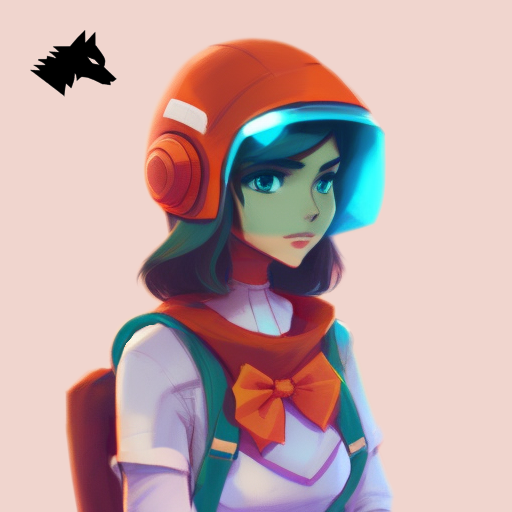

WA-01LF
WA-01LF is a rationality space opera adaptation of Red Riding Hood: a futuristic AI-alignment anachronism of the Brothers Grimm.
It was loosely inspired by HPMOR, rather fortuitously I worked as an AI programmer on Hogwarts Legacy, which made this project a natural evolution.
I originally started researching cognitive bias to enhance my cognition because I was failing to ship anything as an indie dev. I also want a virtual laboratory in which to study consciousness with AGI.